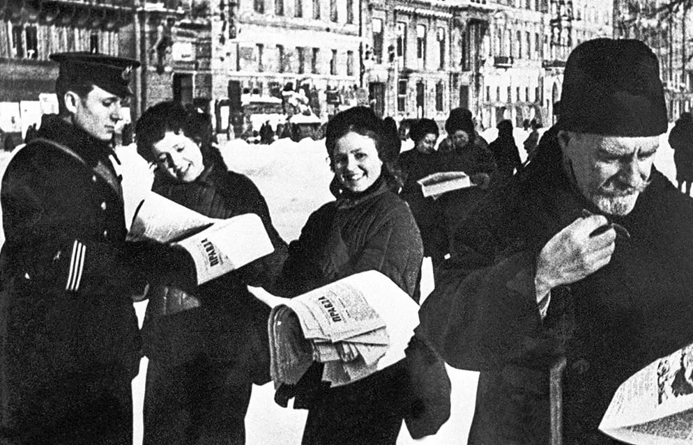

After the Revolution
After the revolution, Rosenstein's house was confiscated, but during the NEP he managed to rent it and sold it room by room. This is how many Jewish families from Belarus and Ukraine came to live here. Before the war, this house became known as the Jewish house.
Konstantin Rosenstein himself survived the blockade and lived in his room on the 2nd floor until his death in 1952.

Konstantin Rosenstein during the victory celebrations, Leningrad, 9th May 1945